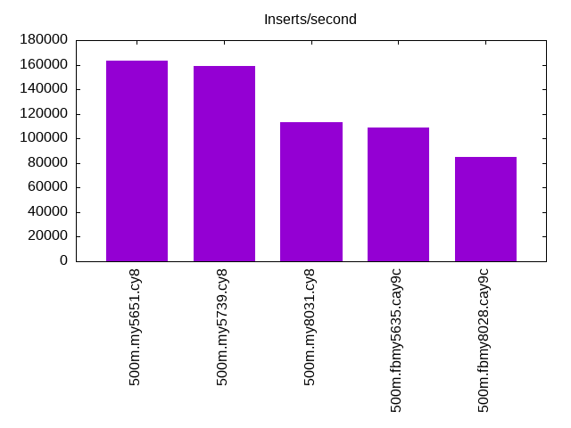
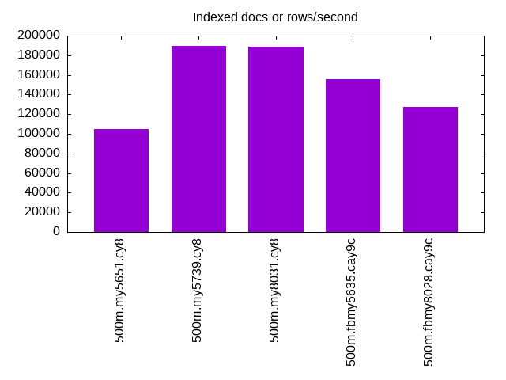
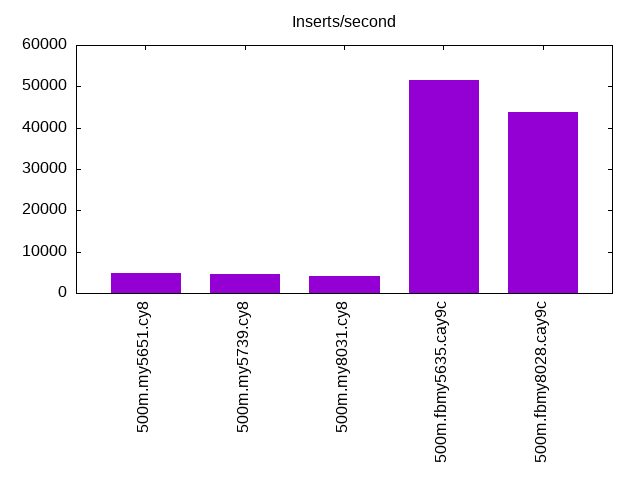
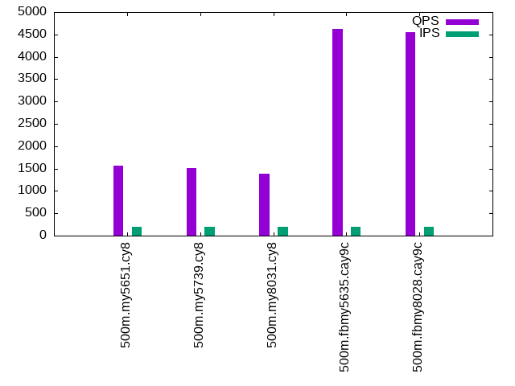
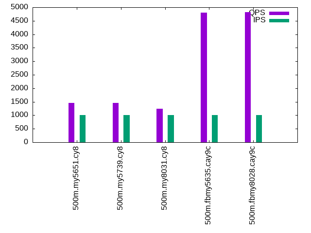
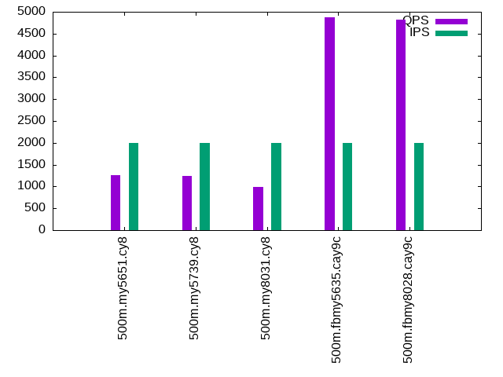

This is a report for the insert benchmark with 500M docs and 2 client(s). It is generated by scripts (bash, awk, sed) and Tufte might not be impressed. An overview of the insert benchmark is here and a short update is here. Below, by DBMS, I mean DBMS+version.config. An example is my8020.c10b40 where my means MySQL, 8020 is version 8.0.20 and c10b40 is the name for the configuration file.
The test server has 8 AMD cores, 16G RAM and an NVMe SSD. It is described here as the Beelink. The benchmark was run with 2 clients and there were 1 or 2 connections per client (1 for queries, 1 for inserts). The benchmark loads 500M rows without secondary indexes, creates secondary indexes, loads another 10M rows then does 3 read+write tests for one hour each that do queries as fast as possible with 100, 500 and then 1000 writes/second/client concurrent with the queries. The database doesn't fit in memory and parts of the benchmark are IO-bound. Clients and the DBMS share one server. The per-database configs are in the per-database subdirectories here.
The tested DBMS are:
The numbers are inserts/s for l.i0 and l.i1, indexed docs (or rows) /s for l.x and queries/s for q*.2. The values are the average rate over the entire test for inserts (IPS) and queries (QPS). The range of values for IPS and QPS is split into 3 parts: bottom 25%, middle 50%, top 25%. Values in the bottom 25% have a red background, values in the top 25% have a green background and values in the middle have no color. A gray background is used for values that can be ignored because the DBMS did not sustain the target insert rate. Red backgrounds are not used when the minimum value is within 80% of the max value.
| dbms | l.i0 | l.x | l.i1 | q100.1 | q500.1 | q1000.1 |
|---|---|---|---|---|---|---|
| 500m.my5651.cy8 | 163666 | 105019 | 4719 | 1564 | 1461 | 1254 |
| 500m.my5739.cy8 | 159185 | 189217 | 4543 | 1509 | 1465 | 1236 |
| 500m.my8031.cy8 | 112994 | 188362 | 4146 | 1389 | 1248 | 996 |
| 500m.fbmy5635.cay9c | 108838 | 155262 | 51546 | 4626 | 4802 | 4866 |
| 500m.fbmy8028.cay9c | 85222 | 127058 | 43860 | 4557 | 4824 | 4812 |
This lists the average rate of inserts/s for the tests that do inserts concurrent with queries. For such tests the query rate is listed in the table above. The read+write tests are setup so that the insert rate should match the target rate every second. Cells that are not at least 95% of the target have a red background to indicate a failure to satisfy the target.
| dbms | q100.1 | q500.1 | q1000.1 |
|---|---|---|---|
| my5651.cy8 | 200 | 999 | 1998 |
| my5739.cy8 | 200 | 999 | 1997 |
| my8031.cy8 | 200 | 999 | 1997 |
| fbmy5635.cay9c | 200 | 999 | 1997 |
| fbmy8028.cay9c | 200 | 999 | 1997 |
| target | 200 | 1000 | 2000 |
l.i0: load without secondary indexes. Graphs for performance per 1-second interval are here.
Average throughput:
Insert response time histogram: each cell has the percentage of responses that take <= the time in the header and max is the max response time in seconds. For the max column values in the top 25% of the range have a red background and in the bottom 25% of the range have a green background. The red background is not used when the min value is within 80% of the max value.
| dbms | 256us | 1ms | 4ms | 16ms | 64ms | 256ms | 1s | 4s | 16s | gt | max |
|---|---|---|---|---|---|---|---|---|---|---|---|
| my5651.cy8 | 13.506 | 86.043 | 0.305 | 0.133 | 0.012 | nonzero | nonzero | 1.268 | |||
| my5739.cy8 | 0.061 | 99.755 | 0.160 | 0.015 | 0.008 | 0.001 | nonzero | 1.072 | |||
| my8031.cy8 | 99.772 | 0.188 | 0.032 | 0.006 | 0.002 | nonzero | 1.710 | ||||
| fbmy5635.cay9c | 99.982 | 0.008 | 0.003 | 0.005 | 0.002 | 0.630 | |||||
| fbmy8028.cay9c | 99.873 | 0.111 | 0.007 | 0.008 | 0.002 | 0.585 |
Performance metrics for the DBMS listed above. Some are normalized by throughput, others are not. Legend for results is here.
ips qps rps rmbps wps wmbps rpq rkbpq wpi wkbpi csps cpups cspq cpupq dbgb1 dbgb2 rss maxop p50 p99 tag 163666 0 1433 5.6 682.9 52.7 0.009 0.035 0.004 0.330 20265 40.8 0.124 20 32.9 73.4 10.6 1.268 83907 48047 500m.my5651.cy8 159185 0 0 0.0 735.2 53.1 0.000 0.000 0.005 0.342 17760 43.3 0.112 22 32.9 73.4 10.9 1.072 79911 61731 500m.my5739.cy8 112994 0 0 0.0 736.9 42.8 0.000 0.000 0.007 0.388 13686 42.2 0.121 30 32.8 35.2 11.1 1.710 56751 42154 500m.my8031.cy8 108838 0 0 0.0 201.3 44.7 0.000 0.000 0.002 0.420 12090 43.2 0.111 32 15.7 16.1 4.1 0.630 54141 39375 500m.fbmy5635.cay9c 85222 0 0 0.0 157.6 33.8 0.000 0.001 0.002 0.407 9812 41.2 0.115 39 15.6 16.2 4.3 0.585 42453 33280 500m.fbmy8028.cay9c
l.x: create secondary indexes.
Average throughput:
Performance metrics for the DBMS listed above. Some are normalized by throughput, others are not. Legend for results is here.
ips qps rps rmbps wps wmbps rpq rkbpq wpi wkbpi csps cpups cspq cpupq dbgb1 dbgb2 rss maxop p50 p99 tag 105019 0 1103 90.0 3934.0 169.3 0.010 0.878 0.037 1.651 13890 19.4 0.132 15 67.8 108.3 10.5 0.027 NA NA 500m.my5651.cy8 189217 0 1298 154.1 2343.1 199.4 0.007 0.834 0.012 1.079 11517 20.2 0.061 9 73.6 114.1 10.2 0.007 NA NA 500m.my5739.cy8 188362 0 3011 258.8 3681.2 231.5 0.016 1.407 0.020 1.259 12802 65.4 0.068 28 73.3 75.7 10.4 0.009 NA NA 500m.my8031.cy8 155262 0 198 33.2 106.2 23.1 0.001 0.219 0.001 0.152 1008 24.6 0.006 13 32.9 33.3 6.5 0.003 NA NA 500m.fbmy5635.cay9c 127058 0 162 27.2 85.4 18.9 0.001 0.219 0.001 0.152 1077 24.7 0.008 16 32.8 33.4 8.4 0.004 NA NA 500m.fbmy8028.cay9c
l.i1: continue load after secondary indexes created. Graphs for performance per 1-second interval are here.
Average throughput:
Insert response time histogram: each cell has the percentage of responses that take <= the time in the header and max is the max response time in seconds. For the max column values in the top 25% of the range have a red background and in the bottom 25% of the range have a green background. The red background is not used when the min value is within 80% of the max value.
| dbms | 256us | 1ms | 4ms | 16ms | 64ms | 256ms | 1s | 4s | 16s | gt | max |
|---|---|---|---|---|---|---|---|---|---|---|---|
| my5651.cy8 | 25.239 | 57.047 | 11.907 | 4.192 | 1.544 | 0.072 | 1.962 | ||||
| my5739.cy8 | 0.815 | 82.888 | 10.268 | 4.386 | 1.586 | 0.057 | 1.514 | ||||
| my8031.cy8 | 0.103 | 78.997 | 12.318 | 7.152 | 1.430 | 0.926 | |||||
| fbmy5635.cay9c | 99.946 | 0.041 | 0.009 | 0.004 | 0.221 | ||||||
| fbmy8028.cay9c | 99.846 | 0.135 | 0.013 | 0.006 | 0.177 |
Performance metrics for the DBMS listed above. Some are normalized by throughput, others are not. Legend for results is here.
ips qps rps rmbps wps wmbps rpq rkbpq wpi wkbpi csps cpups cspq cpupq dbgb1 dbgb2 rss maxop p50 p99 tag 4719 0 2632 40.2 3917.1 132.3 0.558 8.729 0.830 28.711 14396 8.8 3.051 149 103.6 147.4 10.5 1.962 599 0 500m.my5651.cy8 4543 0 2461 38.4 3642.0 123.8 0.542 8.666 0.802 27.902 13892 12.4 3.058 218 103.6 147.3 10.7 1.514 649 50 500m.my5739.cy8 4146 0 2280 35.6 4628.5 135.2 0.550 8.800 1.116 33.390 19132 13.8 4.615 266 103.2 108.7 10.7 0.926 599 50 500m.my8031.cy8 51546 0 2 0.2 236.7 52.9 0.000 0.004 0.005 1.051 12511 44.4 0.243 69 34.4 36.1 6.7 0.221 25971 19536 500m.fbmy5635.cay9c 43860 0 0 0.0 182.1 40.1 0.000 0.000 0.004 0.935 10659 41.7 0.243 76 34.1 36.0 7.1 0.177 21975 17330 500m.fbmy8028.cay9c
q100.1: range queries with 100 insert/s per client. Graphs for performance per 1-second interval are here.
Average throughput:
Query response time histogram: each cell has the percentage of responses that take <= the time in the header and max is the max response time in seconds. For max values in the top 25% of the range have a red background and in the bottom 25% of the range have a green background. The red background is not used when the min value is within 80% of the max value.
| dbms | 256us | 1ms | 4ms | 16ms | 64ms | 256ms | 1s | 4s | 16s | gt | max |
|---|---|---|---|---|---|---|---|---|---|---|---|
| my5651.cy8 | 31.358 | 14.786 | 52.173 | 1.115 | 0.543 | 0.024 | 0.159 | ||||
| my5739.cy8 | 8.615 | 36.471 | 53.628 | 0.530 | 0.712 | 0.044 | 0.178 | ||||
| my8031.cy8 | 4.158 | 39.292 | 54.366 | 1.396 | 0.781 | 0.007 | 0.112 | ||||
| fbmy5635.cay9c | 1.228 | 98.756 | 0.012 | 0.004 | nonzero | nonzero | 0.089 | ||||
| fbmy8028.cay9c | 0.521 | 99.463 | 0.013 | 0.003 | nonzero | 0.035 |
Insert response time histogram: each cell has the percentage of responses that take <= the time in the header and max is the max response time in seconds. For max values in the top 25% of the range have a red background and in the bottom 25% of the range have a green background. The red background is not used when the min value is within 80% of the max value.
| dbms | 256us | 1ms | 4ms | 16ms | 64ms | 256ms | 1s | 4s | 16s | gt | max |
|---|---|---|---|---|---|---|---|---|---|---|---|
| my5651.cy8 | 0.014 | 31.188 | 55.736 | 13.062 | 0.218 | ||||||
| my5739.cy8 | 81.674 | 11.979 | 6.347 | 0.244 | |||||||
| my8031.cy8 | 0.007 | 86.854 | 12.736 | 0.403 | 0.127 | ||||||
| fbmy5635.cay9c | 99.951 | 0.049 | 0.008 | ||||||||
| fbmy8028.cay9c | 88.979 | 11.021 | 0.010 |
Performance metrics for the DBMS listed above. Some are normalized by throughput, others are not. Legend for results is here.
ips qps rps rmbps wps wmbps rpq rkbpq wpi wkbpi csps cpups cspq cpupq dbgb1 dbgb2 rss maxop p50 p99 tag 200 1564 7854 122.7 1012.8 29.9 5.020 80.291 5.072 153.511 23285 7.7 14.884 394 103.6 147.4 10.5 0.159 848 48 500m.my5651.cy8 200 1509 7578 118.4 1005.1 29.7 5.023 80.362 5.033 152.122 22685 8.6 15.035 456 103.6 147.4 10.7 0.178 799 48 500m.my5739.cy8 200 1389 6967 108.9 1201.1 30.4 5.016 80.252 6.015 155.775 22441 9.8 16.155 564 103.2 108.7 10.7 0.112 767 64 500m.my8031.cy8 200 4626 115 1.0 7.9 0.6 0.025 0.216 0.040 3.332 18383 25.6 3.974 443 34.2 35.9 6.7 0.089 2333 1950 500m.fbmy5635.cay9c 200 4557 115 0.9 4.3 0.3 0.025 0.209 0.022 1.536 18254 26.0 4.006 456 34.1 36.1 7.1 0.035 2301 1742 500m.fbmy8028.cay9c
q500.1: range queries with 500 insert/s per client. Graphs for performance per 1-second interval are here.
Average throughput:
Query response time histogram: each cell has the percentage of responses that take <= the time in the header and max is the max response time in seconds. For max values in the top 25% of the range have a red background and in the bottom 25% of the range have a green background. The red background is not used when the min value is within 80% of the max value.
| dbms | 256us | 1ms | 4ms | 16ms | 64ms | 256ms | 1s | 4s | 16s | gt | max |
|---|---|---|---|---|---|---|---|---|---|---|---|
| my5651.cy8 | 29.983 | 15.494 | 52.365 | 1.343 | 0.788 | 0.027 | 0.177 | ||||
| my5739.cy8 | 7.830 | 36.514 | 54.051 | 0.676 | 0.897 | 0.032 | 0.175 | ||||
| my8031.cy8 | 3.977 | 39.066 | 53.767 | 1.927 | 1.252 | 0.011 | 0.118 | ||||
| fbmy5635.cay9c | 2.599 | 97.391 | 0.009 | 0.002 | nonzero | 0.031 | |||||
| fbmy8028.cay9c | 0.743 | 99.248 | 0.009 | 0.001 | 0.010 |
Insert response time histogram: each cell has the percentage of responses that take <= the time in the header and max is the max response time in seconds. For max values in the top 25% of the range have a red background and in the bottom 25% of the range have a green background. The red background is not used when the min value is within 80% of the max value.
| dbms | 256us | 1ms | 4ms | 16ms | 64ms | 256ms | 1s | 4s | 16s | gt | max |
|---|---|---|---|---|---|---|---|---|---|---|---|
| my5651.cy8 | 16.328 | 62.913 | 20.042 | 0.718 | 0.155 | ||||||
| my5739.cy8 | 16.218 | 79.958 | 3.597 | 0.226 | 0.150 | ||||||
| my8031.cy8 | 0.933 | 94.446 | 4.571 | 0.050 | 0.150 | ||||||
| fbmy5635.cay9c | 99.969 | 0.029 | 0.001 | 0.019 | |||||||
| fbmy8028.cay9c | 99.544 | 0.456 | 0.013 |
Performance metrics for the DBMS listed above. Some are normalized by throughput, others are not. Legend for results is here.
ips qps rps rmbps wps wmbps rpq rkbpq wpi wkbpi csps cpups cspq cpupq dbgb1 dbgb2 rss maxop p50 p99 tag 999 1461 7300 113.9 1220.2 36.2 4.997 79.809 1.222 37.128 22428 8.3 15.351 454 103.9 147.7 10.5 0.177 752 511 500m.my5651.cy8 999 1465 7317 114.3 1225.6 36.3 4.993 79.894 1.227 37.264 22683 9.5 15.480 519 103.9 147.6 10.7 0.175 751 527 500m.my5739.cy8 999 1248 6233 97.4 1580.9 40.1 4.995 79.917 1.583 41.166 21657 10.4 17.355 667 103.5 109.0 10.7 0.118 640 384 500m.my8031.cy8 999 4802 0 0.0 12.3 1.8 0.000 0.005 0.012 1.803 18971 26.4 3.951 440 34.6 34.8 8.1 0.031 2381 2206 500m.fbmy5635.cay9c 999 4824 0 0.0 9.4 1.5 0.000 0.000 0.009 1.570 19197 27.1 3.979 449 34.6 35.0 7.5 0.010 2397 2014 500m.fbmy8028.cay9c
q1000.1: range queries with 1000 insert/s per client. Graphs for performance per 1-second interval are here.
Average throughput:
Query response time histogram: each cell has the percentage of responses that take <= the time in the header and max is the max response time in seconds. For max values in the top 25% of the range have a red background and in the bottom 25% of the range have a green background. The red background is not used when the min value is within 80% of the max value.
| dbms | 256us | 1ms | 4ms | 16ms | 64ms | 256ms | 1s | 4s | 16s | gt | max |
|---|---|---|---|---|---|---|---|---|---|---|---|
| my5651.cy8 | 27.816 | 16.492 | 52.366 | 1.925 | 1.354 | 0.048 | 0.161 | ||||
| my5739.cy8 | 7.519 | 35.648 | 54.293 | 0.938 | 1.530 | 0.072 | 0.166 | ||||
| my8031.cy8 | 3.677 | 37.955 | 52.655 | 3.451 | 2.241 | 0.022 | 0.133 | ||||
| fbmy5635.cay9c | 3.481 | 96.496 | 0.021 | 0.002 | 0.011 | ||||||
| fbmy8028.cay9c | 0.644 | 99.330 | 0.023 | 0.003 | 0.011 |
Insert response time histogram: each cell has the percentage of responses that take <= the time in the header and max is the max response time in seconds. For max values in the top 25% of the range have a red background and in the bottom 25% of the range have a green background. The red background is not used when the min value is within 80% of the max value.
| dbms | 256us | 1ms | 4ms | 16ms | 64ms | 256ms | 1s | 4s | 16s | gt | max |
|---|---|---|---|---|---|---|---|---|---|---|---|
| my5651.cy8 | 10.072 | 68.732 | 20.436 | 0.760 | 0.163 | ||||||
| my5739.cy8 | 11.904 | 81.491 | 6.312 | 0.292 | 0.194 | ||||||
| my8031.cy8 | 0.125 | 95.172 | 4.640 | 0.063 | 0.134 | ||||||
| fbmy5635.cay9c | 99.916 | 0.084 | 0.015 | ||||||||
| fbmy8028.cay9c | 99.761 | 0.236 | 0.003 | 0.021 |
Performance metrics for the DBMS listed above. Some are normalized by throughput, others are not. Legend for results is here.
ips qps rps rmbps wps wmbps rpq rkbpq wpi wkbpi csps cpups cspq cpupq dbgb1 dbgb2 rss maxop p50 p99 tag 1998 1254 6464 100.6 1774.2 52.8 5.154 82.136 0.888 27.056 21338 9.3 17.012 593 104.3 148.1 10.5 0.161 671 288 500m.my5651.cy8 1997 1236 6336 99.0 1750.1 52.2 5.129 82.059 0.876 26.767 21158 10.7 17.125 693 104.3 148.1 10.7 0.166 655 288 500m.my5739.cy8 1997 996 5140 80.3 2364.0 60.4 5.159 82.542 1.184 30.994 20802 11.7 20.877 939 103.9 109.5 10.7 0.133 527 96 500m.my8031.cy8 1997 4866 0 0.0 20.3 3.6 0.000 0.007 0.010 1.822 19426 27.7 3.992 455 35.3 36.5 10.5 0.011 2429 2237 500m.fbmy5635.cay9c 1997 4812 1 0.2 15.7 2.9 0.000 0.037 0.008 1.481 19337 28.4 4.019 472 35.1 36.4 10.7 0.011 2398 2014 500m.fbmy8028.cay9c
l.i0: load without secondary indexes
Performance metrics for all DBMS, not just the ones listed above. Some are normalized by throughput, others are not. Legend for results is here.
ips qps rps rmbps wps wmbps rpq rkbpq wpi wkbpi csps cpups cspq cpupq dbgb1 dbgb2 rss maxop p50 p99 tag 163666 0 1433 5.6 682.9 52.7 0.009 0.035 0.004 0.330 20265 40.8 0.124 20 32.9 73.4 10.6 1.268 83907 48047 500m.my5651.cy8 159185 0 0 0.0 735.2 53.1 0.000 0.000 0.005 0.342 17760 43.3 0.112 22 32.9 73.4 10.9 1.072 79911 61731 500m.my5739.cy8 112994 0 0 0.0 736.9 42.8 0.000 0.000 0.007 0.388 13686 42.2 0.121 30 32.8 35.2 11.1 1.710 56751 42154 500m.my8031.cy8 108838 0 0 0.0 201.3 44.7 0.000 0.000 0.002 0.420 12090 43.2 0.111 32 15.7 16.1 4.1 0.630 54141 39375 500m.fbmy5635.cay9c 85222 0 0 0.0 157.6 33.8 0.000 0.001 0.002 0.407 9812 41.2 0.115 39 15.6 16.2 4.3 0.585 42453 33280 500m.fbmy8028.cay9c
l.x: create secondary indexes
Performance metrics for all DBMS, not just the ones listed above. Some are normalized by throughput, others are not. Legend for results is here.
ips qps rps rmbps wps wmbps rpq rkbpq wpi wkbpi csps cpups cspq cpupq dbgb1 dbgb2 rss maxop p50 p99 tag 105019 0 1103 90.0 3934.0 169.3 0.010 0.878 0.037 1.651 13890 19.4 0.132 15 67.8 108.3 10.5 0.027 NA NA 500m.my5651.cy8 189217 0 1298 154.1 2343.1 199.4 0.007 0.834 0.012 1.079 11517 20.2 0.061 9 73.6 114.1 10.2 0.007 NA NA 500m.my5739.cy8 188362 0 3011 258.8 3681.2 231.5 0.016 1.407 0.020 1.259 12802 65.4 0.068 28 73.3 75.7 10.4 0.009 NA NA 500m.my8031.cy8 155262 0 198 33.2 106.2 23.1 0.001 0.219 0.001 0.152 1008 24.6 0.006 13 32.9 33.3 6.5 0.003 NA NA 500m.fbmy5635.cay9c 127058 0 162 27.2 85.4 18.9 0.001 0.219 0.001 0.152 1077 24.7 0.008 16 32.8 33.4 8.4 0.004 NA NA 500m.fbmy8028.cay9c
l.i1: continue load after secondary indexes created
Performance metrics for all DBMS, not just the ones listed above. Some are normalized by throughput, others are not. Legend for results is here.
ips qps rps rmbps wps wmbps rpq rkbpq wpi wkbpi csps cpups cspq cpupq dbgb1 dbgb2 rss maxop p50 p99 tag 4719 0 2632 40.2 3917.1 132.3 0.558 8.729 0.830 28.711 14396 8.8 3.051 149 103.6 147.4 10.5 1.962 599 0 500m.my5651.cy8 4543 0 2461 38.4 3642.0 123.8 0.542 8.666 0.802 27.902 13892 12.4 3.058 218 103.6 147.3 10.7 1.514 649 50 500m.my5739.cy8 4146 0 2280 35.6 4628.5 135.2 0.550 8.800 1.116 33.390 19132 13.8 4.615 266 103.2 108.7 10.7 0.926 599 50 500m.my8031.cy8 51546 0 2 0.2 236.7 52.9 0.000 0.004 0.005 1.051 12511 44.4 0.243 69 34.4 36.1 6.7 0.221 25971 19536 500m.fbmy5635.cay9c 43860 0 0 0.0 182.1 40.1 0.000 0.000 0.004 0.935 10659 41.7 0.243 76 34.1 36.0 7.1 0.177 21975 17330 500m.fbmy8028.cay9c
q100.1: range queries with 100 insert/s per client
Performance metrics for all DBMS, not just the ones listed above. Some are normalized by throughput, others are not. Legend for results is here.
ips qps rps rmbps wps wmbps rpq rkbpq wpi wkbpi csps cpups cspq cpupq dbgb1 dbgb2 rss maxop p50 p99 tag 200 1564 7854 122.7 1012.8 29.9 5.020 80.291 5.072 153.511 23285 7.7 14.884 394 103.6 147.4 10.5 0.159 848 48 500m.my5651.cy8 200 1509 7578 118.4 1005.1 29.7 5.023 80.362 5.033 152.122 22685 8.6 15.035 456 103.6 147.4 10.7 0.178 799 48 500m.my5739.cy8 200 1389 6967 108.9 1201.1 30.4 5.016 80.252 6.015 155.775 22441 9.8 16.155 564 103.2 108.7 10.7 0.112 767 64 500m.my8031.cy8 200 4626 115 1.0 7.9 0.6 0.025 0.216 0.040 3.332 18383 25.6 3.974 443 34.2 35.9 6.7 0.089 2333 1950 500m.fbmy5635.cay9c 200 4557 115 0.9 4.3 0.3 0.025 0.209 0.022 1.536 18254 26.0 4.006 456 34.1 36.1 7.1 0.035 2301 1742 500m.fbmy8028.cay9c
q500.1: range queries with 500 insert/s per client
Performance metrics for all DBMS, not just the ones listed above. Some are normalized by throughput, others are not. Legend for results is here.
ips qps rps rmbps wps wmbps rpq rkbpq wpi wkbpi csps cpups cspq cpupq dbgb1 dbgb2 rss maxop p50 p99 tag 999 1461 7300 113.9 1220.2 36.2 4.997 79.809 1.222 37.128 22428 8.3 15.351 454 103.9 147.7 10.5 0.177 752 511 500m.my5651.cy8 999 1465 7317 114.3 1225.6 36.3 4.993 79.894 1.227 37.264 22683 9.5 15.480 519 103.9 147.6 10.7 0.175 751 527 500m.my5739.cy8 999 1248 6233 97.4 1580.9 40.1 4.995 79.917 1.583 41.166 21657 10.4 17.355 667 103.5 109.0 10.7 0.118 640 384 500m.my8031.cy8 999 4802 0 0.0 12.3 1.8 0.000 0.005 0.012 1.803 18971 26.4 3.951 440 34.6 34.8 8.1 0.031 2381 2206 500m.fbmy5635.cay9c 999 4824 0 0.0 9.4 1.5 0.000 0.000 0.009 1.570 19197 27.1 3.979 449 34.6 35.0 7.5 0.010 2397 2014 500m.fbmy8028.cay9c
q1000.1: range queries with 1000 insert/s per client
Performance metrics for all DBMS, not just the ones listed above. Some are normalized by throughput, others are not. Legend for results is here.
ips qps rps rmbps wps wmbps rpq rkbpq wpi wkbpi csps cpups cspq cpupq dbgb1 dbgb2 rss maxop p50 p99 tag 1998 1254 6464 100.6 1774.2 52.8 5.154 82.136 0.888 27.056 21338 9.3 17.012 593 104.3 148.1 10.5 0.161 671 288 500m.my5651.cy8 1997 1236 6336 99.0 1750.1 52.2 5.129 82.059 0.876 26.767 21158 10.7 17.125 693 104.3 148.1 10.7 0.166 655 288 500m.my5739.cy8 1997 996 5140 80.3 2364.0 60.4 5.159 82.542 1.184 30.994 20802 11.7 20.877 939 103.9 109.5 10.7 0.133 527 96 500m.my8031.cy8 1997 4866 0 0.0 20.3 3.6 0.000 0.007 0.010 1.822 19426 27.7 3.992 455 35.3 36.5 10.5 0.011 2429 2237 500m.fbmy5635.cay9c 1997 4812 1 0.2 15.7 2.9 0.000 0.037 0.008 1.481 19337 28.4 4.019 472 35.1 36.4 10.7 0.011 2398 2014 500m.fbmy8028.cay9c
Insert response time histogram
256us 1ms 4ms 16ms 64ms 256ms 1s 4s 16s gt max tag 0.000 13.506 86.043 0.305 0.133 0.012 nonzero nonzero 0.000 0.000 1.268 my5651.cy8 0.000 0.061 99.755 0.160 0.015 0.008 0.001 nonzero 0.000 0.000 1.072 my5739.cy8 0.000 0.000 99.772 0.188 0.032 0.006 0.002 nonzero 0.000 0.000 1.710 my8031.cy8 0.000 0.000 99.982 0.008 0.003 0.005 0.002 0.000 0.000 0.000 0.630 fbmy5635.cay9c 0.000 0.000 99.873 0.111 0.007 0.008 0.002 0.000 0.000 0.000 0.585 fbmy8028.cay9c
TODO - determine whether there is data for create index response time
Insert response time histogram
256us 1ms 4ms 16ms 64ms 256ms 1s 4s 16s gt max tag 0.000 0.000 25.239 57.047 11.907 4.192 1.544 0.072 0.000 0.000 1.962 my5651.cy8 0.000 0.000 0.815 82.888 10.268 4.386 1.586 0.057 0.000 0.000 1.514 my5739.cy8 0.000 0.000 0.103 78.997 12.318 7.152 1.430 0.000 0.000 0.000 0.926 my8031.cy8 0.000 0.000 99.946 0.041 0.009 0.004 0.000 0.000 0.000 0.000 0.221 fbmy5635.cay9c 0.000 0.000 99.846 0.135 0.013 0.006 0.000 0.000 0.000 0.000 0.177 fbmy8028.cay9c
Query response time histogram
256us 1ms 4ms 16ms 64ms 256ms 1s 4s 16s gt max tag 31.358 14.786 52.173 1.115 0.543 0.024 0.000 0.000 0.000 0.000 0.159 my5651.cy8 8.615 36.471 53.628 0.530 0.712 0.044 0.000 0.000 0.000 0.000 0.178 my5739.cy8 4.158 39.292 54.366 1.396 0.781 0.007 0.000 0.000 0.000 0.000 0.112 my8031.cy8 1.228 98.756 0.012 0.004 nonzero nonzero 0.000 0.000 0.000 0.000 0.089 fbmy5635.cay9c 0.521 99.463 0.013 0.003 nonzero 0.000 0.000 0.000 0.000 0.000 0.035 fbmy8028.cay9c
Insert response time histogram
256us 1ms 4ms 16ms 64ms 256ms 1s 4s 16s gt max tag 0.000 0.000 0.014 31.188 55.736 13.062 0.000 0.000 0.000 0.000 0.218 my5651.cy8 0.000 0.000 0.000 81.674 11.979 6.347 0.000 0.000 0.000 0.000 0.244 my5739.cy8 0.000 0.000 0.007 86.854 12.736 0.403 0.000 0.000 0.000 0.000 0.127 my8031.cy8 0.000 0.000 99.951 0.049 0.000 0.000 0.000 0.000 0.000 0.000 0.008 fbmy5635.cay9c 0.000 0.000 88.979 11.021 0.000 0.000 0.000 0.000 0.000 0.000 0.010 fbmy8028.cay9c
Query response time histogram
256us 1ms 4ms 16ms 64ms 256ms 1s 4s 16s gt max tag 29.983 15.494 52.365 1.343 0.788 0.027 0.000 0.000 0.000 0.000 0.177 my5651.cy8 7.830 36.514 54.051 0.676 0.897 0.032 0.000 0.000 0.000 0.000 0.175 my5739.cy8 3.977 39.066 53.767 1.927 1.252 0.011 0.000 0.000 0.000 0.000 0.118 my8031.cy8 2.599 97.391 0.009 0.002 nonzero 0.000 0.000 0.000 0.000 0.000 0.031 fbmy5635.cay9c 0.743 99.248 0.009 0.001 0.000 0.000 0.000 0.000 0.000 0.000 0.010 fbmy8028.cay9c
Insert response time histogram
256us 1ms 4ms 16ms 64ms 256ms 1s 4s 16s gt max tag 0.000 0.000 16.328 62.913 20.042 0.718 0.000 0.000 0.000 0.000 0.155 my5651.cy8 0.000 0.000 16.218 79.958 3.597 0.226 0.000 0.000 0.000 0.000 0.150 my5739.cy8 0.000 0.000 0.933 94.446 4.571 0.050 0.000 0.000 0.000 0.000 0.150 my8031.cy8 0.000 0.000 99.969 0.029 0.001 0.000 0.000 0.000 0.000 0.000 0.019 fbmy5635.cay9c 0.000 0.000 99.544 0.456 0.000 0.000 0.000 0.000 0.000 0.000 0.013 fbmy8028.cay9c
Query response time histogram
256us 1ms 4ms 16ms 64ms 256ms 1s 4s 16s gt max tag 27.816 16.492 52.366 1.925 1.354 0.048 0.000 0.000 0.000 0.000 0.161 my5651.cy8 7.519 35.648 54.293 0.938 1.530 0.072 0.000 0.000 0.000 0.000 0.166 my5739.cy8 3.677 37.955 52.655 3.451 2.241 0.022 0.000 0.000 0.000 0.000 0.133 my8031.cy8 3.481 96.496 0.021 0.002 0.000 0.000 0.000 0.000 0.000 0.000 0.011 fbmy5635.cay9c 0.644 99.330 0.023 0.003 0.000 0.000 0.000 0.000 0.000 0.000 0.011 fbmy8028.cay9c
Insert response time histogram
256us 1ms 4ms 16ms 64ms 256ms 1s 4s 16s gt max tag 0.000 0.000 10.072 68.732 20.436 0.760 0.000 0.000 0.000 0.000 0.163 my5651.cy8 0.000 0.000 11.904 81.491 6.312 0.292 0.000 0.000 0.000 0.000 0.194 my5739.cy8 0.000 0.000 0.125 95.172 4.640 0.063 0.000 0.000 0.000 0.000 0.134 my8031.cy8 0.000 0.000 99.916 0.084 0.000 0.000 0.000 0.000 0.000 0.000 0.015 fbmy5635.cay9c 0.000 0.000 99.761 0.236 0.003 0.000 0.000 0.000 0.000 0.000 0.021 fbmy8028.cay9c